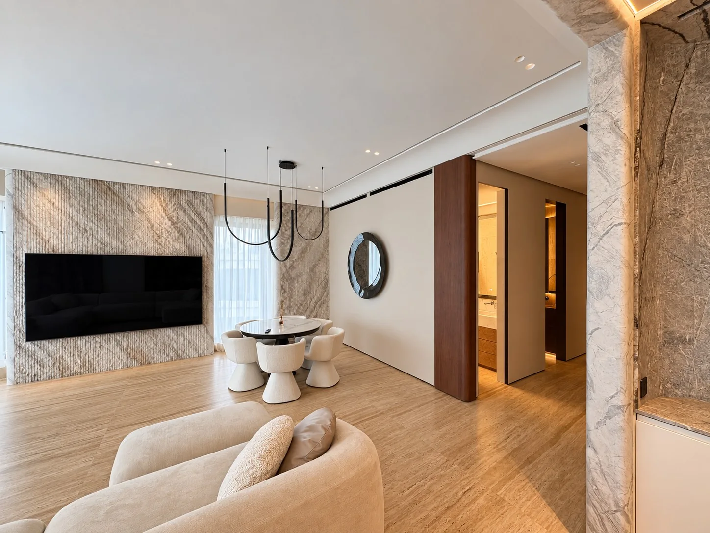
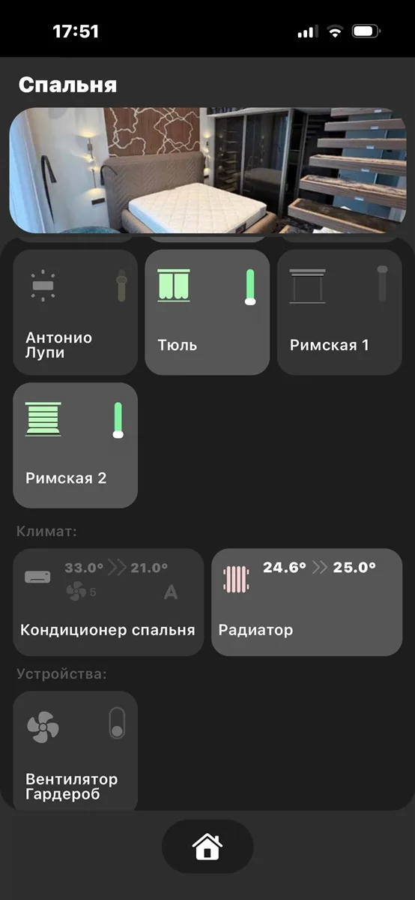
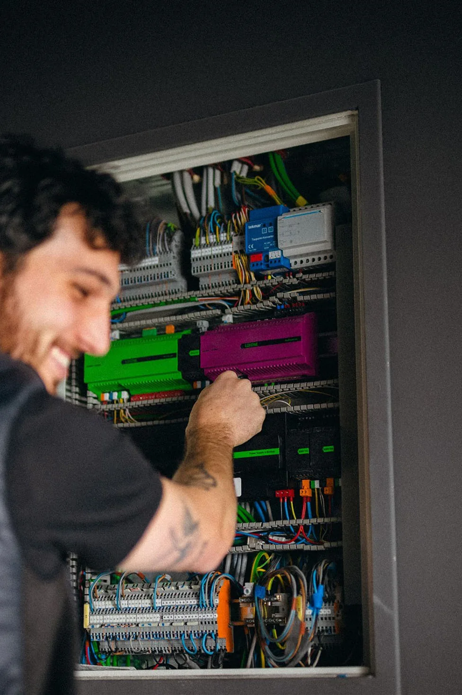
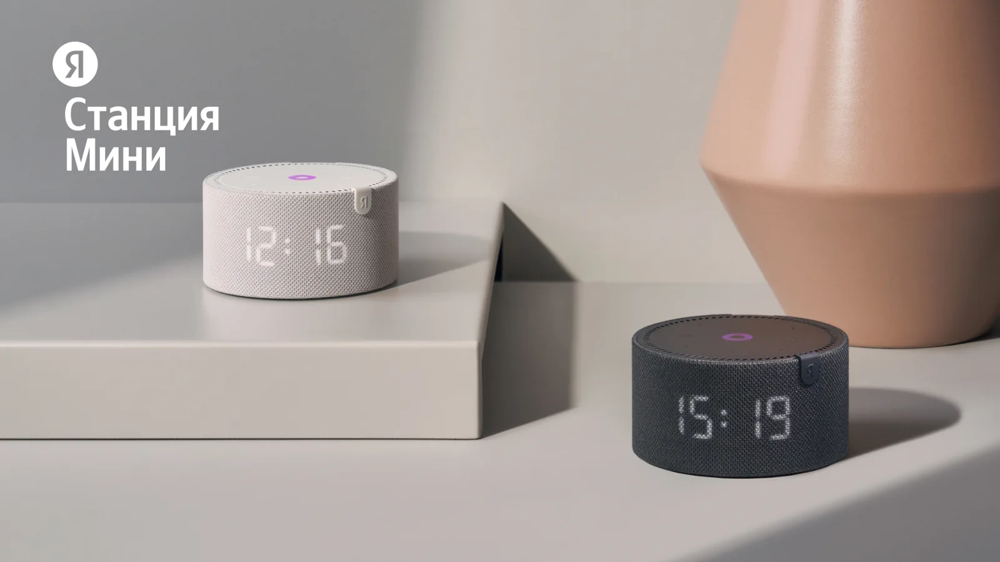
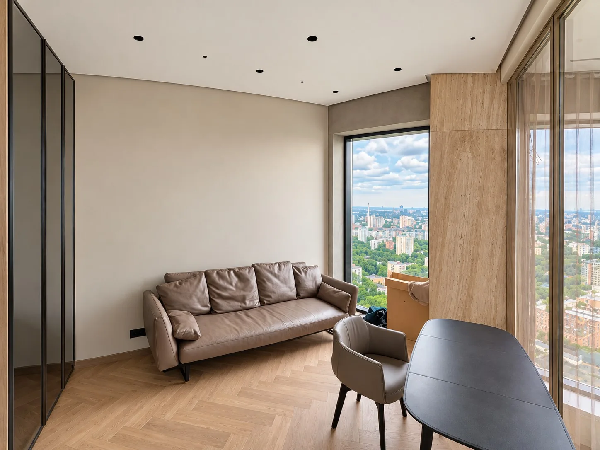
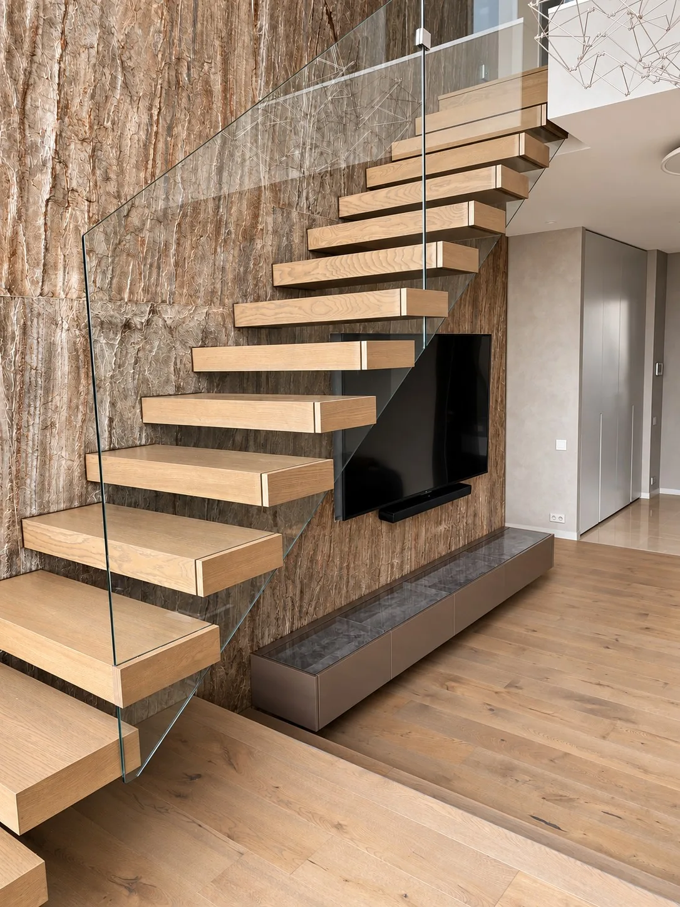
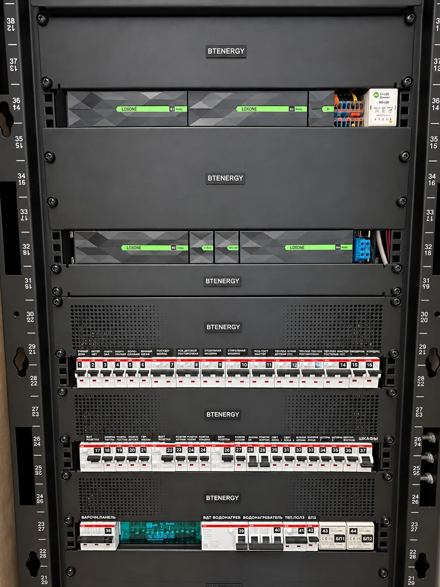
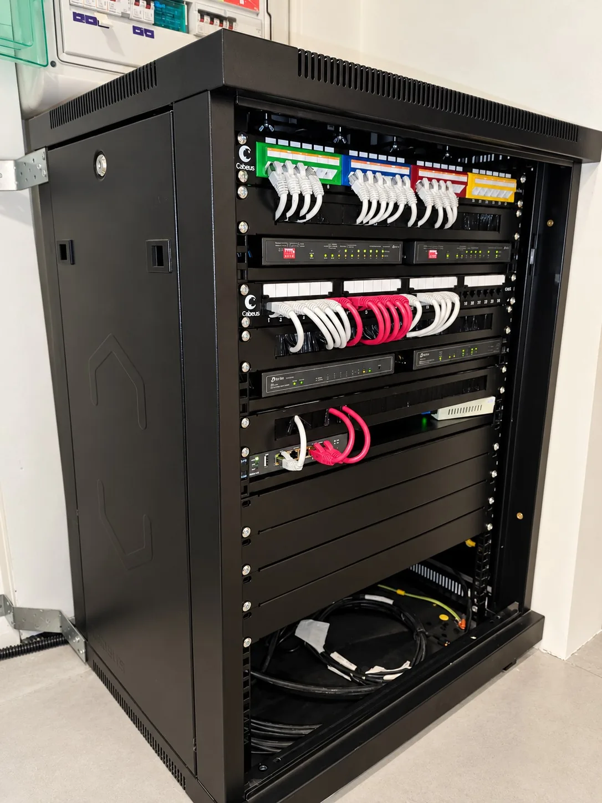

Доброе утро
Шторы открываются, свет плавно включается, в комнате комфортная температура.
Умный дом для вас
Умный дом объединяет освещение, климат, шторы и безопасность в одну систему. Он поддерживает комфорт, берёт на себя привычные действия и позволяет управлять домом так, как удобно вам — кнопкой, со смартфона или голосом.

Шторы открываются, свет плавно включается, в комнате комфортная температура.
Свет гаснет, выбранные розетки отключаются, включается охрана.
Одна команда приглушает свет, закрывает шторы и включает музыку.
Умный дом начинается с ваших привычек. Датчики замечают движение, изменение температуры или протечку, а система запускает заранее настроенные действия. Свет включается там, где вы находитесь, отопление поддерживает выбранную температуру, а шторы помогают защитить комнаты от яркого солнца.
Спроектируем общую логику для квартиры или загородного дома: от отдельных комнат до всех инженерных систем. Согласуем нужные функции, подберём оборудование и настроим сценарии, которыми удобно пользоваться каждый день.
Управление группами света, регулировка яркости и световые сцены для отдыха, работы и приёма гостей. Ночная подсветка помогает пройти по дому без яркого верхнего света.
Отопление, тёплые полы, кондиционирование и вентиляция работают по общей логике. Температуру можно задать отдельно для комнат и менять по расписанию.
Датчики открытия и движения помогают контролировать состояние дома. Предусмотрим уведомления о выбранных событиях и сценарий «Никого нет дома».
Открывайте шторы кнопкой, из приложения или по расписанию. Настроим работу солнцезащиты с учётом времени суток и выбранного сценария.
Датчики в кухне, санузлах и технических помещениях обнаруживают воду. При срабатывании система может перекрыть подачу воды и отправить уведомление.
Добавим совместимые аудиосистемы и бытовые устройства в повседневные сценарии. Например, вечерняя сцена объединит мягкий свет, закрытые шторы и любимую музыку.

Управляйте светом, температурой и шторами из приложения, проверяйте состояние устройств и запускайте сценарии одним нажатием. Привычные настенные выключатели тоже остаются частью управления. Для доступа вне дома настроим предусмотренное выбранной системой удалённое подключение.

Объединим свет, климат, шторы и датчики под управлением Miniserver. Подберём проводное или беспроводное оборудование и настроим сценарии под ваши привычки. Локальная автоматика работает даже без интернета.

Добавим голосовые команды для совместимых устройств: включить свет, закрыть шторы или запустить сценарий. Для связи с Loxone подберём подходящую интеграцию или шлюз и заранее проверим доступные функции.
Удалённый доступ и облачные голосовые команды требуют интернета. Уже установленное оборудование проверим на совместимость с выбранной системой.

Светлая гостиная с зоной отдыха и большими окнами. В таком пространстве особенно удобно объединить управление освещением, шторами и температурой.
Для подобных квартир предлагаем световые сцены для работы и отдыха, автоматическое управление шторами и настройку климата по комнатам. Сценарий «Ушёл» помогает выключить выбранные группы света одним нажатием.

Лестница со стеклянным ограждением, просторный холл и мультимедийная зона. Автоматизация помогает связать разные зоны дома в удобные повседневные сценарии.
Для таких объектов можно предусмотреть ночное освещение проходов по датчикам движения, управление климатом на этажах, защиту от протечек и общую команду выключения света перед уходом. Состав функций подбираем под планировку и привычки семьи.
Собираем электрические щиты, щиты автоматизации и слаботочные шкафы для квартир и загородных домов. Услугу можно заказать отдельно или в составе проекта умного дома.
Подберём оборудование, согласуем компоновку, выполним сборку и маркировку. Предусмотрим удобный доступ для обслуживания и возможность расширения системы.
Обсудить сборку щита

Стоимость зависит от площади, выбранных функций и стадии ремонта. Подготовим состав системы и смету после обсуждения задачи.
Получить расчётВозможность установки зависит от проводки и выбранных устройств. Подберём подходящий вариант после знакомства с объектом.
В системе на базе Loxone настроенные локальные функции выполняет Miniserver: например, управление светом с выключателей и автоматика климата. Удалённый доступ, облачные сервисы и голосовые интеграции зависят от интернет-соединения. Для вашего проекта заранее определим, какие функции будут работать автономно.
В проект можно заложить расширение. Заранее обсудим, что нужно сейчас и что вы хотите добавить позже.
Позвоните или напишите нам — обсудим ваш объект, пожелания и следующие шаги.